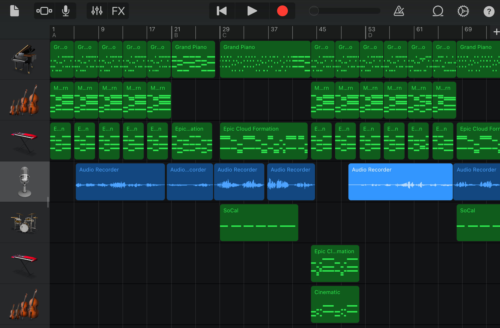

×

Sinners
A Cover of Lauren Aquilina's "Sinners"
Process

I first learned this song on the piano. I made up an accompaniment and would sing along to my own playing. However, I decided to take this arrangement further by adapting it for digital audio production with GarageBand. First, I laid down a base by digitally recording my piano accompaniment. Next, I used the ‘smart instrument’ tools to add two main layers of embellishments: alchemy synth piano chords and string chords. These tools allowed me to play chords of varying pitch and tone without needing to know the instruments. After that, I added some percussion throughout the song. The chorus features rhythmic echoing cymbals, while the bridge features low, echoing drums. I added a few subtle harmony layers toward the end of the song and added a few more embellishments wherever it seemed necessary. To the left is an image of all the track layers I had.
Intentions
The main intention of this project was to get familiar with and experiment with GarageBand. Since I plan to make full video games one day, I thought it might be a good idea to practice making my own music. Although this song is a cover of Lauren Aquilina’s song “Sinners”, I put my own twist on it by making the instrumentals from scratch. I wanted the song to feel ethereal so that the listener would feel transported to another world when listening to the recording. I used high reverb settings, naturally echoing instruments such as strings and synth, and sparse percussion to convey the serene yet powerful mood I was going for.

Credits